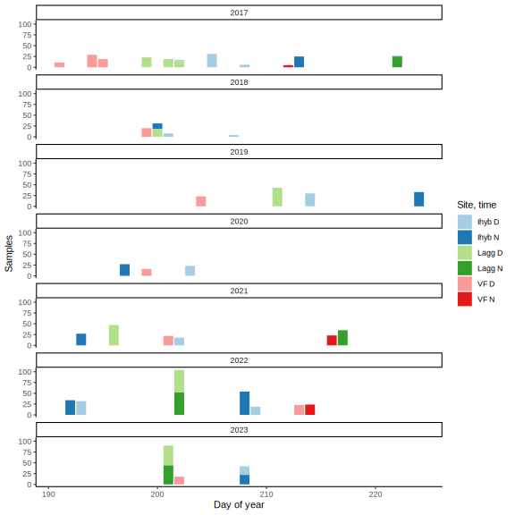

library(tidyverse)
library(knitr)
knitr::opts_chunk$set(comment="", cache=T, warning = F, message = F,
fig.path = "images/", dev="svglite", dev.args=list(fix_text_size=FALSE), fig.height=8, fig.width=8)
options(digits=4, knitr.kable.NA = "") # for kablesmetadata <- list.files("data/volatiles", pattern = "Ipomopsis long-term volatiles - 20", full.names=T) %>%
map_dfr(~read_tsv(.x, show_col_types = F) %>%
mutate(across(any_of(c("pump_id", "plant", "vial")), as.character)), .id="metafile") %>%
mutate(year = year(date))ggplot(metadata, aes(x=yday(date), fill=paste(site, time))) + facet_wrap(vars(year), ncol=1) + geom_bar() +
scale_fill_brewer(palette = "Paired") + theme_classic() + labs(x="Day of year", y="Floral and ambient samples", fill="Site, time")
metadata %>% count(year, site, time) %>% pivot_wider(names_from=c("site","time"), values_from="n") %>%
kable(caption = "floral and ambient samples in each each year")| year | Ihyb_D | Ihyb_N | Lagg_D | Lagg_N | VF_D | VF_N |
|---|---|---|---|---|---|---|
| 2017 | 34 | 25 | 50 | 22 | 53 | 3 |
| 2018 | 12 | 13 | 18 | 20 | ||
| 2019 | 30 | 33 | 43 | 23 | ||
| 2020 | 23 | 27 | 16 | |||
| 2021 | 18 | 25 | 47 | 35 | 22 | 23 |
| 2022 | 48 | 91 | 52 | 52 | 23 | 24 |
| 2023 | 20 | 22 | 46 | 44 | 18 |